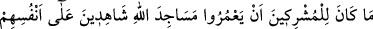
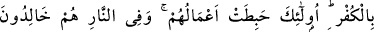
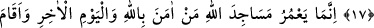
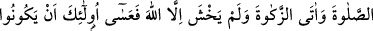
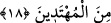

MESCİDLERİ İMAR EDENLER
17. (Allah’a) Ortak koşanlar, kendi küfürlerine kendileri şâhitlik ederlerken
Allah’ın mescidlerini îmar edemezler. Onların yaptıkları işler boşa gitmiştir ve
onlar cehennemde sürekli kalacaklardır.
18. Allah’ın mescidlerini ancak Allah’a ve ahiret gününe inanan, namazı dosdoğru
kılan, zekatı veren ve Allah’tan başka kimseden korkmayanlar imar ederler. İşte
onların doğru yolu bulanlardan olacakları umulur.
Bu âyet, Bedir savaşında esir düşen, aralarında Nebî (a.s.)’ın amcası Abbas’ın da
bulunduğu bir kısım Kureyş önderleri hakkında nâzil olmuştur. Ashab-ı kiramdan bir
grup onların yanına vararak Allah’a şirk koşmaları sebebiyle kendilerini ayıpladılar.
Hz. Ali (r.a.) da Abbas’ı Rasûlullah (s.a.)’e karşı savaşa çıkması, sıla-i rahmi
gözetmemesi ve müşriklere yardımcı olması sebebiyle kınamaya başladı. Bunun üzerine
Abbas: “Size ne oluyor da ayıplarımızı sayıp döküyor, iyiliklerimizi gizliyorsunuz?”
dedi. Hz. Ali de bunun üzerine: “Sizin iyi işleriniz de mi var?” deyince Abbas:
“Elbette. Mescid-i Haram’ın bakıcıları biziz. Perdedarlığını, hacılara su dağıtma işini
biz yapıyoruz.” dedi. İşte Allah Teâlâ onları reddetmek üzere şöyle buyurdu:
Allah’a “Ortak koşanlar, kendi küfürlerine kendileri şâhitlik ederlerken Allah’ın
mescidlerini” yâni Mescid-i Harâm’ı Allah tarafından mûteber olacak şekilde “îmar
edemezler.” îmar etmeleri sahih ve düzgün olamaz.
“İmar edemezler” ifâdesindeki nefiy/olumsuzluk, bunun olabileceğini değil varlığını
ve gerçekleşmesini red anlamındadır. Buna benzer bir nefiy/olumsuzluk da, “Bunların
oralara ancak korkarak girmeleri gerekir.” (el-Bakara, 2/114) âyetinde
bulunmaktadır.
Burada Mescid-i Haram’dan çoğul bir ifadeyle bahsedilmesi, bütün mescidlerin
kıblesi ve imamı olmasındandır. Durum böyle olunca orayı imar eden bütün mescidleri
imar etmiş gibi olacaktır. Ya da Mescid-i Haram’ın her köşesi, diğer mescidlerden
farklı olarak ayrı bir mescid gibidir. Çünkü diğer mescidlerin köşelerinde kıble farklı
değildir.